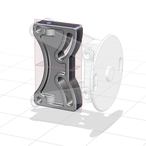
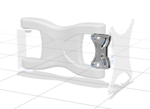
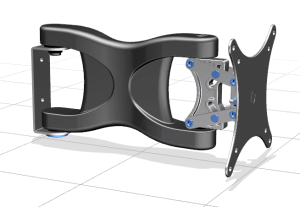

在装配导航器中，右击 des03_wall_mount_ver_angle_bracket 节点并将光标放在显示父项上。
注意到支架部件有两个父项：
des03_wall_mount_linkage_assm
des03_wall_mount_assembled
支架的直接父项为连接杆装配，而连接杆装破的父项为壁挂组件。
选择显示父项→des03_wall_mount_linkage_assm。

连接杆装配现在是显示部件，而竖直支架为工作部件。
在装配导航器中，右击 des03_wall_mount_ver_angle_bracket 节点并选择显示父项→des03_wall_mount_assembled。

壁挂组件现在是显示部件，而竖直支架仍然为工作部件。
这是因为您选中了保持复选框。
在装配导航器中，双击 des03_wall_mount_assembled 节点。

记住，双击装配导航器中的节点将会使该节点部件成为工作部件，由于壁挂组件为顶层装配，所以它也是显示部件。
关闭所有部件。